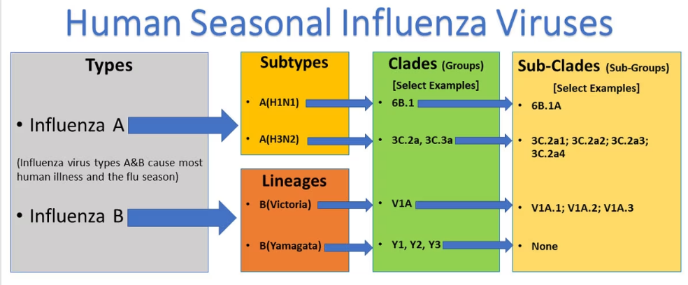

Types of Influenza Viruses There are four types of influenza viruses: A, B, C, and D. Influenza A and B viruses cause seasonal epidemics of disease in people (known as flu season) almost every winter in the United States. Influenza A viruses are the only influenza viruses known to cause flu pandemics (i.e., global epidemics of flu disease). A pandemic can occur when a new and different influenza A virus emerges that infects people, has the ability to spread efficiently among people, and against which people have little or no immunity. Influenza C virus infections generally cause mild illness and are not thought to cause human epidemics. Influenza D viruses primarily affect cattle with spillover to other animals but are not known to infect people to cause illness.
Influenza A viruses are divided into subtypes based on two proteins on the surface of the virus: hemagglutinin (H) and neuraminidase (N). There are 18 different hemagglutinin subtypes and 11 different neuraminidase subtypes (H1 through H18 and N1 through N11, respectively). While more than 130 influenza A subtype combinations have been identified in nature, primarily from wild birds, there are potentially many more influenza A subtype combinations given the propensity for virus “reassortment.” Reassortment is a process by which influenza viruses swap gene segments. Reassortment can occur when two influenza viruses infect a host at the same time and swap genetic information. Current subtypes of influenza A viruses that routinely circulate in people include A(H1N1) and A(H3N2). Influenza A subtypes can be further broken down into different genetic “clades” and “sub-clades.” See the “Influenza Viruses” graphic below for a visual depiction of these classifications.
Human Seasonal Influenza Virus:
This graphic shows the two types of influenza viruses (A and B) that cause most human illness and that are responsible for flu seasons each year. Influenza A viruses are further classified into subtypes, while influenza B viruses are further classified into two lineages: B/Yamagata and B/Victoria. Both influenza A and B viruses can be further classified into clades and sub-clades (which are sometimes called groups and sub-groups.) Note that this graphic is an example, and currently circulating influenza clades and subclades may differ from those presented here.

Clades and sub-clades can be alternatively called “groups” and “sub-groups,” respectively. An influenza clade or group is a further subdivision of influenza viruses (beyond subtypes or lineages) based on the similarity of their HA gene sequences. Clades and subclades are shown on phylogenetic trees as groups of viruses that usually have similar genetic changes (i.e., nucleotide or amino acid changes) and have a single common ancestor represented as a node in the tree . Dividing viruses into clades and subclades helps flu experts track the proportion of viruses from different clades in circulation. Note that clades and sub-clades that are genetically different from others are not necessarily antigenically different. This is best understood by first introducing the concepts of “antigens” and “antigenic properties”. As previously described, flu viruses have hemagglutinin (H) and neuraminidase (N) surface proteins. These proteins act as antigens. Antigens are molecular structures on the surface of viruses that are recognized by the immune system and can trigger an immune response (such as antibody production). The antigenic properties are a reflection of the antibody or immune response triggered by the antigens on a particular virus. When two flu viruses are antigenically different, this means that a host’s immune response (antibodies) elicited by infection or vaccination with one of the viruses will not as easily recognize and neutralize the other virus. Therefore, for antigenically different viruses, immunity developed against one of the viruses will not necessarily protect against the other virus as well.
Conversely, when two flu viruses are antigenically similar, a host’s immune response (antibodies) elicited by infection or vaccination with one of the viruses will recognize and neutralize the other virus, thereby protecting against the other virus.
Currently circulating influenza A(H1N1) viruses are related to the pandemic 2009 H1N1 virus that emerged in the spring of 2009 and caused a flu pandemic (CDC 2009 H1N1 Flu website). These viruses, scientifically called the “A(H1N1)pdm09 virus,” and more generally called “2009 H1N1,” have continued to circulate seasonally since then and have undergone genetic changes and changes to their antigenic properties (i.e., the properties of the virus that affect immunity). Influenza A(H3N2) viruses also change both genetically and antigenically. Influenza A(H3N2) viruses have formed many separate, genetically different clades in recent years that continue to co-circulate. Influenza B viruses are not divided into subtypes, but instead are further classified into two lineages: B/Yamagata and B/Victoria. Similar to influenza A viruses, influenza B viruses can then be further classified into specific clades and sub-clades. Influenza B viruses generally change more slowly in terms of their genetic and antigenic properties than influenza A viruses, especially influenza A(H3N2) viruses. Influenza surveillance data from recent years shows co-circulation of influenza B viruses from both lineages in the United States and around the world. However, the proportion of influenza B viruses from each lineage that circulate can vary by geographic location and by season. In recent years, flu B/Yamagata viruses have circulated much less frequently in comparison to flu B/Victoria viruses globally. understanding the naming of flu viruses virus type, place virus isolated, strain number, year isolated, virus subtype example a sydney o5 97 (h3n2) Figure 2 – This image shows how influenza viruses are named. The name starts with the virus type, followed by the place the virus was isolated, followed by the virus strain number (often a sample identifier), the year isolated, and finally, the virus subtype.
Naming Influenza Viruses CDC follows an internationally accepted naming convention for influenza viruses. This convention was accepted by WHO in 1979 and published in February 1980 in the Bulletin of the World Health Organization, 58(4):585-591 (1980) (see A revision of the system of nomenclature for influenza viruses: a WHO Memorandum [854 KB, 7 pages]). The approach uses the following components: The antigenic type (e.g., A, B, C, D) The host of origin (e.g., swine, equine, chicken, etc.). For human-origin viruses, no host of origin designation is given. Note the following examples: (Duck example): avian influenza A(H1N1), A/duck/Alberta/35/76 (Human example): seasonal influenza A(H3N2), A/Perth/16/2019 Geographical origin (e.g., Denver, Taiwan, etc.) Strain number (e.g., 7, 15, etc.) Year of collection (e.g., 57, 2009, etc.) For influenza A viruses, the hemagglutinin and neuraminidase antigen description are provided in parentheses (e.g., influenza A(H1N1) virus, influenza A(H5N1) virus) The 2009 pandemic virus was assigned a distinct name: A(H1N1)pdm09 to distinguish it from the seasonal influenza A(H1N1) viruses that circulated prior to the pandemic. When humans are infected with influenza viruses that normally circulate in swine (pigs), these viruses are call variant viruses and are designated with the letter “v” (e.g., an A(H3N2)v virus). Influenza Vaccine Viruses Current seasonal flu vaccines are formulated to protect against influenza viruses known to cause epidemics, including: one influenza A(H1N1) virus, one influenza A(H3N2) virus, one influenza B/Victoria lineage virus, and one influenza B/Yamagata lineage virus. Getting a flu vaccine can protect against these viruses as well as additional flu viruses that are antigenically similar to the viruses used to make the vaccine. Information about this season’s vaccine can be found at Preventing Seasonal Flu with Vaccination. Seasonal flu vaccines do not protect against influenza C or D viruses or against zoonotic (animal-origin) flu viruses that can cause human infections, such as variant or avian (bird) flu viruses. In addition, flu vaccines will NOT protect against infection and illness caused by other viruses that also can cause influenza-like symptoms. There are many other viruses besides influenza that can result in influenza-like illness (ILI) that spread during flu season.
Back to Homepage© VERTEX SYSTEM. Develop by TranVietBach. All Rights Reserved.